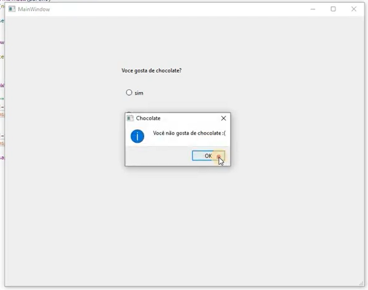
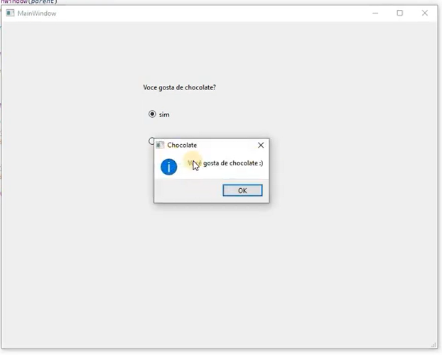

Resposta de sim ou não com RadioButton
Para essa aplicação é necessário saber um pouco sobre sobre RadioButton.
RadioButton é um botão de opção que pode ser ativado (marcado) ou desativado (desmarcado). Os botões de opção normalmente apresentam ao usuário uma escolha "uma entre muitas". Em um grupo de botões de opção, apenas um botão de opção por vez pode ser verificado; se o usuário selecionar outro botão, o botão selecionado anteriormente é desligado.
Neste tutorial veremos como responder perguntas utilizando o botão de opção.
Na parte de design vamos utilizar dois RadioButton, um Label e um PushButton.
No Label devemos digitar a pergunta “Você gosta de chocolate?”;
Em um dos RadioButton devemos digitar “sim” e no outro “não”.
Essa mudança de texto pode ser feita dando um clique duplo sobre o elemento.
Após a modificação deve ficar assim:
Devemos adicionar função ao botão;
Para adicionar funcionalidade ao botão deve-se selecionar a função Clicked (que é ativada ao clicar do lado direito do mouse);
Depois indo até Go to slot…;
Selecionando Clicked e pressionando Ok.
Após acionarmos o Clicked do PushButton seremos direcionados ao mainwindow.cpp, local que vamos programar.
Para iniciar a programação dessa aplicação vamos incluir a biblioteca QMessageBox;
A Classe QMessageBox é utilizada para informar o usuário ou para fazer uma pergunta ao usuário e receber uma resposta;
Também utilizaremos QString para exibir mensagens na execução;
#include "mainwindow.h"
#include "./ui_mainwindow.h"
#include <QMessageBox>
QString msg="";
Após isso, vamos programar dentro da void MainWindow::on_pushButton_clicked() { };
1° Devemos usar if caso seja selecionado um dos RadioButton e usar isChecked para checar se estão selecionadas;
- Se o primeiro RadioButton for selecionado será exibido "Você gosta de chocolate”;
- Se o segundo RadioButton for selecionado será exibido “Você não gosta de chocolate”.
void MainWindow::on_pushButton_clicked()
{
QString msg;
msg="";
if(ui->radioButton->isChecked() ){
msg="Você gosta de chocolate :)";
}
if (ui->radioButton_2->isChecked()){
msg="Você não gosta de chocolate :(";
}
}
2° Vamos adicionar o QMessageBox;
void MainWindow::on_pushButton_clicked()
{
QString msg;
msg="";
if(ui->radioButton->isChecked() ){
msg="Você gosta de chocolate :)";
}
if (ui->radioButton_2->isChecked()){
msg="Você não gosta de chocolate :(";
}
QMessageBox::information(this, "Chocolate", msg);
}
Ao executar o código, a tela final deverá exibir o que for selecionado.
 